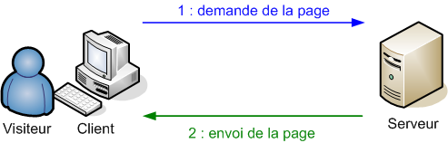

Une fois votre site web créé, vous devez le publier en chargeant les fichiers sur un serveur distant.
C'est sur ce dernier que vos fichiers sont stockés. Un serveur web est, soit un ordinateur qui répond à des requêtes du World Wide Web (www) sur un réseau public (Internet) ou privé (intranet) en utilisant principalement le protocole HTTP comme illustré dans la figure 1 ci-dessous. Un serveur informatique peut être utilisé à la fois pour servir des ressources du Web et pour faire fonctionner en parallèle d'autres services liés comme l'envoi d'e-mails, l'émission de flux streaming, le stockage de données via des bases de données, et nottament le transfert de fichiers par FTP, etc...
pour plus d'information sur le protocole HTTP cliquez
ici.

Figure 1: Modèle Client-Serveur du protocole HTTP
Le protocole FTP:
File Transfer Protocol (protocole de transfert de fichier), ou FTP, est un protocole de communication destiné au partage de fichiers sur un réseau TCP/IP. Il permet, depuis un ordinateur, de copier des fichiers vers un autre ordinateur, ou encore de supprimer ou de modifier des fichiers sur cet ordinateur. Ce mécanisme de copie est souvent utilisé pour alimenter un site web hébergé sur un serveur distant HTTP.La variante de FTP protégée par les protocole SSH s'appelle SFTP.FTP obéit à un modèle client-serveur comme illustré dans la figure 2 ci-dessous, c'est-à-dire qu'une des deux parties, le client, envoie des requêtes auxquelles réagit l'autre, appelé serveur. En pratique, on utilise un logiciel client FTP possédant une interface graphique (ou en ligne de commande) pour faire ces transferts de fichiers. Pour plus d'informations sur le protocole FTP cliquez
ici.
Figure 2: Modèle Client-Serveur du protocole SFTP
Etapes pour publier un site internet:
Etape 1:
Assurer d'avoir l'URL FTP de votre serveur distant, par exemple celui de l'université Toulouse 2 est mi-phpmut.univ-tlse2.fr. Assurez vous aussi d'avoir votre identifiant et votre mot de passe, par exemple pour votre serveur de l'université Toulouse 2 c'est le même compte que celui utilisé pour se connecter aux ordinateurs de l'université.
Etape 2:
Choisissez un client FTP et téléchargez le sur votre pc. Vous trouvez une liste comparative des logiciels clients FTP en cliquant ici.
Etape 3:
Installez le logiciel client FTP que vous venez de télécharger en suivant les instructions pour l'installation.
Etape 4:
Lancer le client FTP que vous venez d'installer et assurez vous que votre ordinateur est connecté à internet.
Etape 5:
En utilisant le logien client FTP connectez vous a votre serveur FTP distant à l'aide de votre identifiant et mot de passe. La manière de se connecter est différente selon le logiciel que vous avez choisi. Pour FileZilla veuillez consulter notre onglet Logiciel utile accessible via notre menu ou en quliquant
ici.
Etape 6:
Vous pouvez maintenant commencer à transferer les fichiers vers votre serveur. en général on peut faire ça avec un glisser-coller (drag and drope) mais celà peut varier selon le logiciel client FTP que vous avez choisi. Pour FileZilla veuillez consulter notre onglet Logiciel utile accessible via notre menu ou en quliquant
ici.